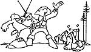

If flying varmints steal your poultry, take Nadine Ross's advice and . . .
Every year, I hatch about 50 chickens inside a simple cardboard-box incubator (equipped with a light bulb and thermometer). After the biddies are born, I keep them in the kitchen for a while, putting the box in the yard for a few hours on sunny days to let them get used to the outside.
When the little critters are about two weeks old, I transfer them to a fencedoff corner of the chicken pen, and they spend another couple of weeks there until the older fowl are accustomed to having them around.
THE ATTACK
Some years back-at a time shortly after my young flock had been moved to outdoor quarters-I discovered I was losing one or two tiny fledglings a day . . . and it didn't take me long to find out why. The problem was hawks . . . "wings of death" with tremendous appetites for baby-chicken dinners.
If I stayed out in the yard, the wily predators would just circle overhead, watching . . . or they'd "hide" in the top of a tall pine tree and wait for me to go back inside. Since I couldn't stand guard all day, it soon became a contest to see who could outsmart whom . . . and I kept coming up the loser.
Before long, 16 of my brood had succumbed to the swift birds of prey, and the same thing was happening to my neighbors' flocks. We were all becoming pretty angry and frustrated, and-even though it's against the law to shoot a hawk-some folks began to talk about getting out the of shotgun.
THE CONFRONTATION
The crisis came to a head when-one afternoon-I walked out the back door just in time to startle a hawk into dropping the piece of yellow fluff it had, that instant, grabbed. I picked the poor victim up but, of course, it was already dead. (Hawks hit mighty hard when they swoop down on their prey.) Holding the limp little form-still soft and warm-made my temper boil!
I looked up and spotted the villain sitting perfectly still in the top of the tall pine near the chicken pen, and I thought, "To heck with that blasted law . . . I'm going to protect what's left of my chicks!"
I went into the house for my .22 rifle . . . brought it out and put it up to my shoulder . . . and got the hawk in my scope. Suddenly, I was face to face with my enemy, and I was stunned: The bird was a truly majestic and beautiful creature ... and I knew I couldn't kill it.
When the hawk finally flew away, 1 just stood there feeling helpless. There was no doubt it'd soon be back.
THE SOLUTION
The very next day-while I was changing the line on one of my fishing reels-I got an idea that I figured just might convince the hawks to start catching field mice instead of my future egg-layers.
The stakes around my chicken pen, made from mill trimmings, are a foot or so higher than my head. I tied the old fishing line around the tops of the posts, and crossed it back and forth until I had lines -about a foot apart-stretched over the entire area. The whole job took me less than 30 minutes.
Then I sat out on the porch steps and watched my magnificent adversary soar high in the sky, make a few circles over the chicken yard . . . and fly out of sight. It was hard to believe a bird could see the nearly invisible monofilament line from that distance, but apparently the hawk did!
That was 10 years ago, and I've never lost another chick to a hawk! The fantastic birds are just too smart to fly into a place they know they might not be able to get out of in a hurry. (Just one word of caution: As soon as the line's no longer neeaed, it should be removed. Otherwise, it'll rot in the sunshine, break and fall into the pen, snare any chicken that wanders into it . . . and you'll have the task of freeing a squawking, flapping hen from yards of tangled-up line.)
My father refers to my anti-hawk technique as "chicken-pen cobwebs" . . . and says he wishes he'd thought of it years ago!
|
 |
|
|